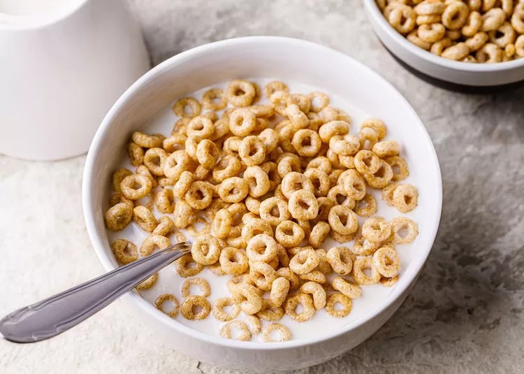

Cereal

Description
Cereal, the humble breakfast hero, is a delightful concoction that brings comfort and convenience to our morning routines. As you pour those golden, crispy flakes into your bowl, a symphony of textures awaits you. Each spoonful carries the promise of a fresh start to the day, with a satisfying crunch that awakens the senses and sets a cheerful tone for the hours ahead.
But cereal is not just about texture; it's a canvas for creativity. The spectrum of flavors and varieties is boundless, offering a diverse array of tastes that can cater to every palate. From the sweet nostalgia of frosted flakes to the hearty goodness of whole grain clusters, there's a cereal for every mood and preference. As the milk cascades over these grains, it transforms them into a delicious mosaic, offering a comforting blend of familiar flavors and gentle nostalgia, reminiscent of childhood mornings. Cereal embodies simplicity, reliability, and a touch of magic that makes each morning brighter, one spoonful at a time.
Ingredients
- Cereal: Choose your favorite cereal, whether it's cornflakes, oat rings, bran flakes, or any other type that suits your taste and dietary preferences.
- Milk: You can use dairy milk or a non-dairy alternative like almond milk, soy milk, or oat milk, depending on your preference and dietary restrictions.
- Bowl: A clean and suitable bowl to hold your cereal.
- Spoon: A spoon for eating your cereal conveniently.
Steps
- Gather Your Ingredients:
Cereal of your choice
Milk (dairy or non-dairy, depending on your preference)
A bowl
A spoon
-
Pour Cereal into a Bowl:
Take your bowl and pour your desired amount of cereal into it. The amount can vary depending on your appetite. For a typical serving, it's usually about 1/2 to 1 cup of cereal.
-
Add Milk:
Once you have your cereal in the bowl, pour milk over it. The amount of milk is also a matter of personal preference. Pour enough milk to cover the cereal to your liking. Some people prefer just a light coating, while others like their cereal fully submerged in milk.
-
Enjoy:
Grab a spoon, give your cereal a gentle stir if you like, and savor your bowl of cereal. It's a quick and simple breakfast that you can enjoy as is or customize with fruits, nuts, or a drizzle of honey for added flavor and nutrition.